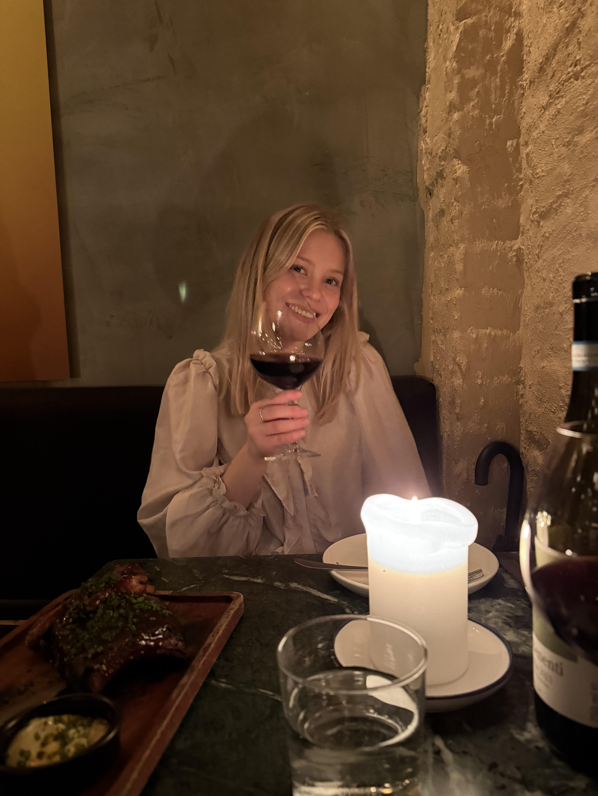

Strålende sharing-menu med litt stressede servitører
Oppdatert mars 2025
Nederst på løkka ligger Jimmy's. I lang tid har jeg løpt forbi og notert meg at denne restauranten må besøkes. Når Kristin ville være var jeg ikke vanskelig å be.Besøket leverte til de grader opp til forventningene. Menyen inneholder et godt utvalg av ulike oster, pizzaer, entrecôte, ribs og pasta. Øverst troner dog oksehalen.
Med min, nå, faste medkompanjong - Kristin - trappet vi opp kl 20 på nedre løkka. For to unge uerfarne studenter, var menyen noe krevende med dens rike vokabular. Det var lite som minnet meg om Lagrangefunksjonen for to individer og deres optimale tilpasning gitt fast skattesats - men det bør jeg kanskje prise herren for. Vi så oss derfor nødt til å bryte bud nr 1 og måtte ty til google for å finne ut hva disse rettene egentlig var. Google ga oss den forklaringen vi trengte og vi bestemte vi oss for å starte med Pizza brød og Burrata med Ndjua. Brødet var akkurat passe sprøtt, mens Ndjuaen roet ned det litt salte brødet. En god start - med en myk rødvin (Kristin - hjelp meg med navn) til.
Utover kvelden merket vi tydelig at det var et fåtall av servitører på jobb. Det gjorde derimot lite når vi fikk en helt utsøkt Glazed Iberico Ribs (eller heter det Rib uten S?). Her kunne en kanskje unnlatt blåmuggosten, men smaken er vel som baken. Oksehalen var heller ikke gal. I tillegg gjorde den helt fantastiske dansemusikken stemningen enda bedre. Jeg fikk litt lyst til å danse på bordet. Heldigvis gjorde jeg ikke det - for en gangs skyld. Derimot litt dumt at man ikke kunne høre hverandre sin stemme - men gi og ta - eller hva man sier.
Gjeste review: Incoming, men Kristin sover smh.